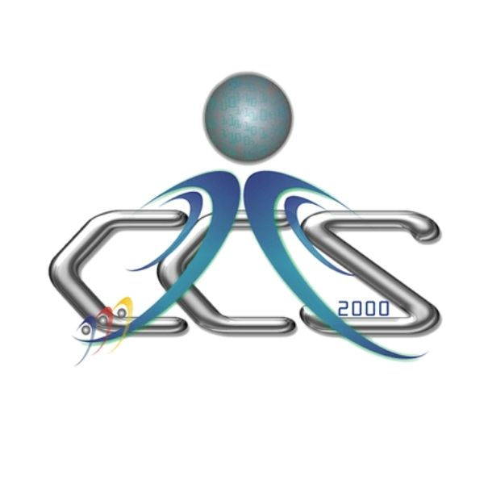
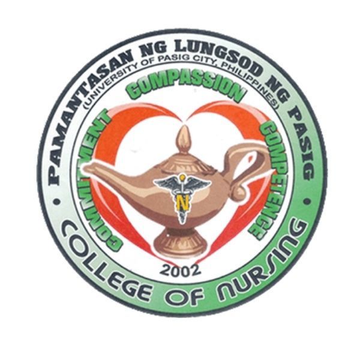
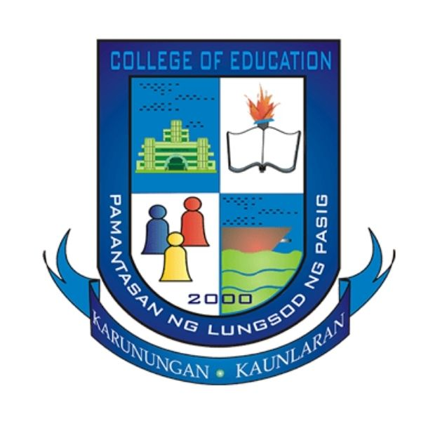
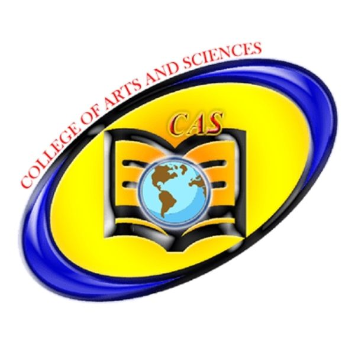
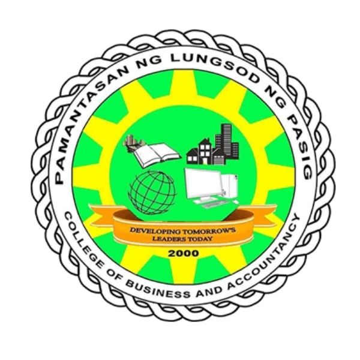
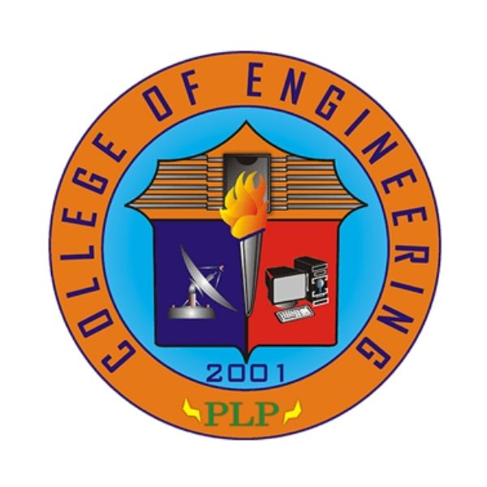
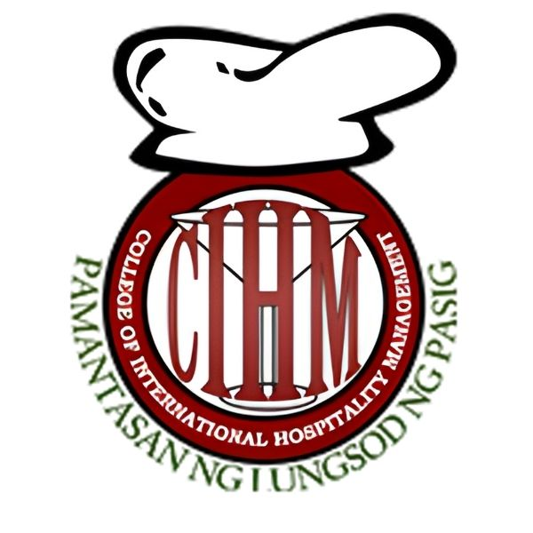

The College of Computer Studies delivers advanced education in information technology and computer science. Its curriculum focuses on software engineering, data systems, and emerging technologies. The college produces skilled graduates ready for professional roles in the technology sector.
Provide students with quality education with the use of the best resources to become globally competitive and responsive to the needs of the community and industry.
The College envisions producing students who are imbued with adequate competencies and standard skills in Information and Communication Technology (ICT).

The College of Nursing provides a scientific and ethical foundation for professional nursing practice. It emphasizes evidence-based patient care and clinical decision-making. The college prepares competent nurses for diverse healthcare environments.
We commit ourselves to delivering a curriculum that is transformative, responsive, evidence-based, and value-based through quality instruction in a culturally sensitive environment, provided by educators who demonstrate competence, professionalism, moral integrity, and innovation.
The Pamantasan ng Lungsod ng Pasig College of Nursing envisions itself as a center of excellence in nursing education, producing nurses who are God-centered, knowledge-driven, values-oriented, and service-oriented.

The College of Education prepares students for professional careers in teaching and educational leadership. Its programs emphasize pedagogical theory, research, and practical application. The college develops educators who are committed to academic excellence and lifelong learning.
To prepare future teachers who are imbued with the ideals, aspirations and traditions of Philippine life and sufficiently equipped with pedagogical knowledge and skills to be globally competitive through relevant education and research, provisions for the mastery of general education subjects, integration of theory and practice, intensification of professional subjects, provision for community exposure and total immersion in practice teaching.
The Pamantasan ng Lungsod ng Pasig – College of Education envisions itself to be a truly educational and value-oriented community dedicated to teaching, research and community service to future teachers who are academically competent, responsible, productive and ready to face the demands of a rapidly changing society and the challenges of global competitiveness.

The College of Arts and Sciences provides the core liberal arts and sciences education for the university. It cultivates essential skills in critical analysis, research, and communication. This college forms the foundational preparation for advanced study and professional life.
The College of Arts and Sciences empowers students through inclusive, interdisciplinary learning that fosters critical thinking, personal well-being, and a commitment to the common good. The Psychology program, grounded in research and practice, prepares compassionate professionals to serve diverse communities in a complex and evolving world.
A transformative hub of interdisciplinary learning, nurturing future-ready students and psychology professionals committed to well-being, equity, and the common good in an ever changing world.

The College of Business and Accountancy educates students in business principles and financial management. It focuses on strategic analysis, entrepreneurship, and ethical accounting practices. The college prepares graduates for leadership in corporate and commercial fields.
CBA offers inclusive, interdisciplinary programs in Business Administration, Entrepreneurship, and Accountancy that empower students to excel in a global environment. We focus on academic excellence, ethical leadership, and community engagement, preparing students to become innovative, civic minded, and globally aware business professionals.
To be a dynamic center of excellence in business education, empowering students with future-proof skills, ethical leadership, and global competitiveness. We aim to contribute to the sustainable development of the Pasig community and beyond, ensuring that our graduates lead impactful, socially responsible careers in a multicultural world.

The College of Engineering educates students in the principles and applications of engineering. The curriculum develops proficiency in designing and managing complex technological systems. It produces engineers equipped to address industrial and infrastructural challenges.
To provide quality engineering education that equips students with the skills, knowledge, and values needed to thrive in a dynamic technological world and contribute to the progress of Pasig City and beyond.
To be a premier institution producing globally competitive engineers grounded in integrity and values, empowering graduates who will drive the economic, cultural, and social development of Pasig City, contributing to its progress and growth in a globalized world.

The College of International Hospitality Management specializes in global tourism and service leadership. Its programs integrate management theory with operational competencies for the hospitality industry. The college develops professionals capable of managing high-standard service enterprises.
To produce God-fearing, competent, educated and well-disciplined future Professionals of the Hospitality Industry through the collaborative efforts of stakeholders concerned by providing competency-based learning and industry training.
A vessel of sturdy institution that will develop competitive, socially responsible professionals in a globally competitive environment of a fast-changing Hospitality Industry through academic, social and moral foundation of learning that could help build a strong community and a greater nation.